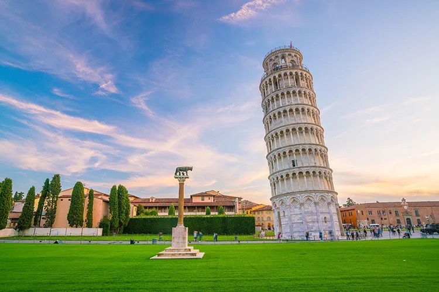
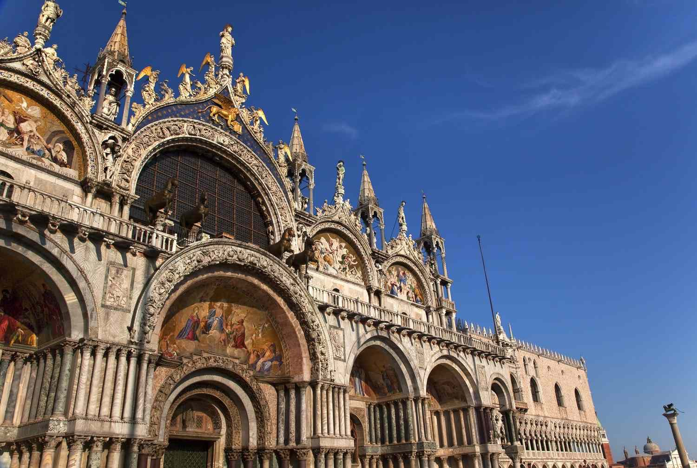
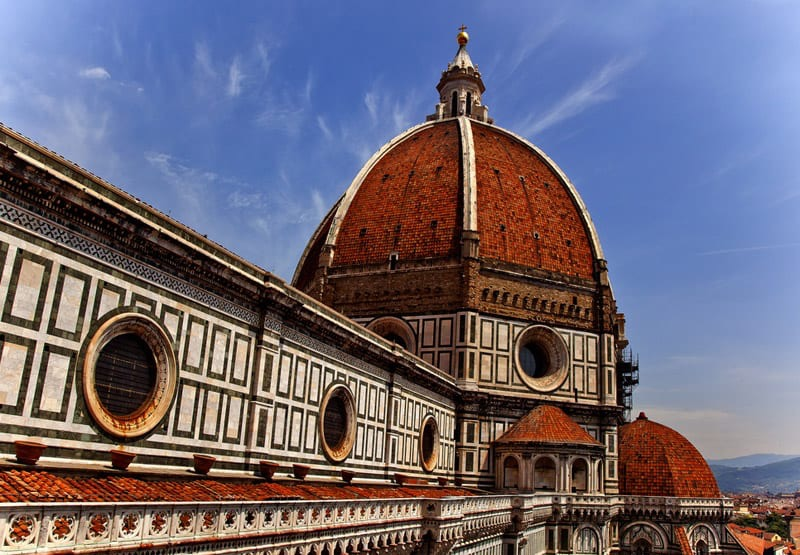

Famous Buildings in Italy
Italy has many beautiful and famous buildings. These places tell stories from the past and show amazing design.

Leaning Tower of Pisa
This tower is in Pisa. It is tall and white. It is famous because it is not straight — it leans to one side!

St. Mark’s Basilica
This church is in Venice. It has golden domes and beautiful art inside. Many people visit it every year.

Florence Cathedral
This big church is in Florence. Its red dome is very famous. It was built hundreds of years ago.